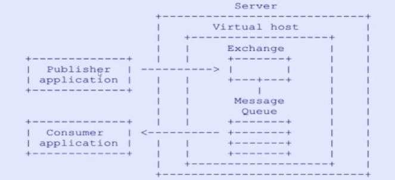
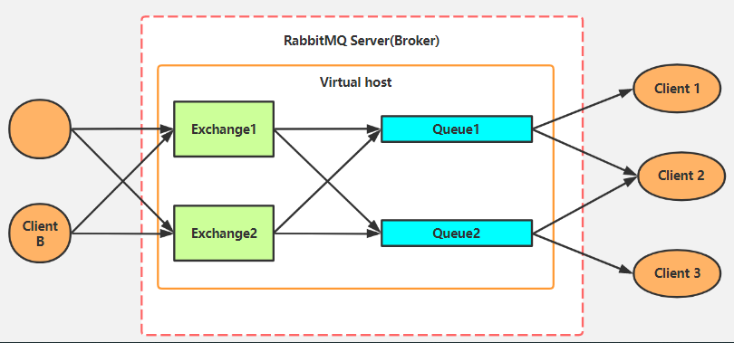
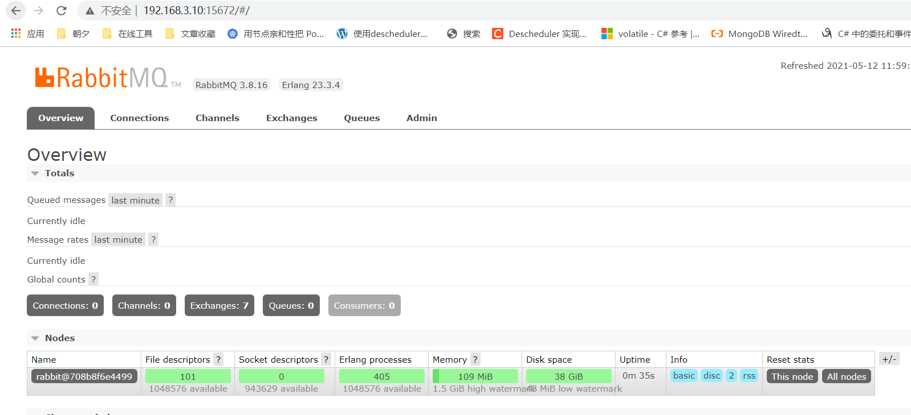

RabbitMQ介绍和六种工作模式详解
一、初识RabbitMQ
是一个开源的消息代理和队列服务器，用来通过普通协议在完全不同的应用之间共享数据，RabbitMQ是使用Erlang(高并发语言)语言来编写的，并且RabbitMQ是基于AMQP协议的。
1.1 AMQP协议
Advanced Message Queuing Protocol(高级消息队列协议)
定义:具有现代特征的二进制协议,是一个提供统一消息服务的应用层标准高级消息队列协议,
是应用层协议的一个开放标准,为面向消息中间件设计。

1.2 AMQP专业术语：（多路复用->在同一个线程中开启多个通道进行操作）
- Server：又称broker，接受客户端的链接，实现AMQP实体服务
- Connection:连接，应用程序与broker的网络连接
- Channel:网络信道，几乎所有的操作都在channel中进行，Channel是进行消息读写的通道。客户端可以建立多个channel，每个channel代表一个会话任务。
- Message:消息，服务器与应用程序之间传送的数据，由Properties和Body组成.Properties可以对消息进行修饰，必须消息的优先级、延迟等高级特性；Body则是消息体内容。
- virtualhost: 虚拟地址，用于进行逻辑隔离，最上层的消息路由。一个virtual host里面可以有若干个Exchange和Queue，同一个Virtual Host 里面不能有相同名称的Exchange 或 Queue。
- Exchange：交换机，接收消息，根据路由键转单消息到绑定队列
- Binding: Exchange和Queue之间的虚拟链接，binding中可以包换routing key
- Routing key: 一个路由规则，虚拟机可用它来确定如何路由一个特定消息。（如负载均衡）
1.3 RabbitMQ整体架构

Exchange和队列是多对多关系，实际操作一般为1个exchange对多个队列，为避免设计过于复杂.
二、Docker安装RabbitMQ
1docker run -d --name rabbitmq -e RABBITMQ_DEFAULT_USER=gerry -e RABBITMQ_DEFAULT_PASS=gerry -p 15672:15672 -p 5672:5672 rabbitmq:3-management输入：http://192.168.3.10:15672访问验证是否OK 
三、RabbitMQ六种队列模式
C#连接RabbitMQ步骤
1、需要导入依赖
RabbitMQ.Client2、创建连接工厂
3、根据工厂获取连接
4、根据连接对象创建Channel对象
3.1 简单队列模式
最简单的工作队列，其中一个消息生产者，一个消息消费者，一个队列。也称为点对点模式
描述：一个生产者 P 发送消息到队列 Q，一个消费者 C 接收
3.2 工作队列
一个消息生产者，一个交换器，一个消息队列，多个消费者。同样也称为点对点模式

工作队列：用来将耗时的任务分发给多个消费者（工作者）
主要解决问题：处理资源密集型任务，并且还要等他完成。有了工作队列，我们就可以将具体的工作放到后面去做，将工作封装为一个消息，发送到队列中，一个工作进程就可以取出消息并完成工作。如果启动了多个工作进程，那么工作就可以在多个进程间共享。
工作队列也称为公平性队列模式，怎么个说法呢？
循环分发，假如我们拥有两个消费者，默认情况下，RabbitMQ 将按顺序将每条消息发送给下一个消费者，平均而言，每个消费者将获得相同数量的消息，这种分发消息的方式称为轮询。
3.3 发布订阅
无选择接收消息，一个消息生产者，一个交换器，多个消息队列，多个消费者。称为发布/订阅模式
在应用中，只需要简单的将队列绑定到交换机上。一个发送到交换机的消息都会被转发到与该交换机绑定的所有队列上。很像子网广播，每台子网内的主机都获得了一份复制的消息。
可以将消息发送给不同类型的消费者。做到发布一次，多个消费者来消费。

P 表示为生产者、 X 表示交换机、C1C2 表示为消费者，红色表示队列。
3.4 路由模式
在发布/订阅模式的基础上，有选择的接收消息，也就是通过 routing 路由进行匹配条件是否满足接收消息。
路由模式跟发布订阅模式类似，然后在订阅模式的基础上加上了类型，订阅模式是分发到所有绑定到交换机的队列，路由模式只分发到绑定在交换机上面指定路由键的队列，我们可以看一下下面这张图：

P 表示为生产者、 X 表示交换机、C1C2 表示为消费者，红色表示队列。
上图是一个结合日志消费级别的配图，在路由模式它会把消息路由到那些 binding key 与 routing key 完全匹配的 Queue 中，此模式也就是 Exchange 模式中的direct模式。
以上图的配置为例，我们以 routingKey="error" 发送消息到 Exchange，则消息会路由到Queue1（amqp.gen-S9b…，这是由RabbitMQ自动生成的Queue名称）和Queue2（amqp.gen-Agl…）。如果我们以 routingKey="info" 或 routingKey="warning" 来发送消息，则消息只会路由到 Queue2。如果我们以其他 routingKey 发送消息，则消息不会路由到这两个 Queue 中。
3.5 主题模式
同样是在发布/订阅模式的基础上，根据主题匹配进行筛选是否接收消息，比第四类更灵活。
topics 主题模式跟 routing 路由模式类似，只不过路由模式是指定固定的路由键 routingKey，而主题模式是可以模糊匹配路由键 routingKey，类似于SQL中 = 和 like 的关系。

P 表示为生产者、 X 表示交换机、C1C2 表示为消费者，红色表示队列。
topics 模式与 routing 模式比较相近，topics 模式不能具有任意的 routingKey，必须由一个英文句点号“.”分隔的字符串（我们将被句点号“.”分隔开的每一段独立的字符串称为一个单词），比如 "lazy.orange.fox"。topics routingKey 中可以存在两种特殊字符“”与“#”，用于做模糊匹配，其中“”用于匹配一个单词，“#”用于匹配多个单词（可以是零个）。
"*" 表示任何一个词 "#" 表示0或多个词
以上图中的配置为例：
如果一个消息的 routingKey 设置为 “xxx.orange.rabbit”，那么该消息会同时路由到 Q1 与 Q2，routingKey="lazy.orange.fox”的消息会路由到Q1与Q2；
routingKey="lazy.brown.fox”的消息会路由到 Q2；
routingKey="lazy.pink.rabbit”的消息会路由到 Q2（只会投递给Q2一次，虽然这个routingKey 与 Q2 的两个 bindingKey 都匹配）；
routingKey="quick.brown.fox”、routingKey="orange”、routingKey="quick.orange.male.rabbit”的消息将会被丢弃，因为它们没有匹配任何bindingKey。
3.6 RPC模式
与上面其他5种所不同之处，类模式是拥有请求/回复的。也就是有响应的，上面5种都没有。
RPC是指远程过程调用，也就是说两台服务器A，B，一个应用部署在A服务器上，想要调用B服务器上应用提供的函数/方法，由于不在一个内存空间，不能直接调用，需要通过网络来表达调用的语义和传达调用的数据。
为什么RPC呢？就是无法在一个进程内，甚至一个计算机内通过本地调用的方式完成的需求，比如不同的系统间的通讯，甚至不同的组织间的通讯。由于计算能力需要横向扩展，需要在多台机器组成的集群上部署应用，
RPC的协议有很多，比如最早的CORBA，Java RMI，Web Service的RPC风格，Hessian，Thrift，甚至Rest API。

RPC的处理流程：
- 当客户端启动时，创建一个匿名的回调队列。
- 客户端为RPC请求设置2个属性：replyTo，设置回调队列名字；correlationId，标记request。
- 请求被发送到rpc_queue队列中。
- RPC服务器端监听rpc_queue队列中的请求，当请求到来时，服务器端会处理并且把带有结果的消息发送给客户端。接收的队列就是replyTo设定的回调队列。
- 客户端监听回调队列，当有消息时，检查correlationId属性，如果与request中匹配，那就是结果了。